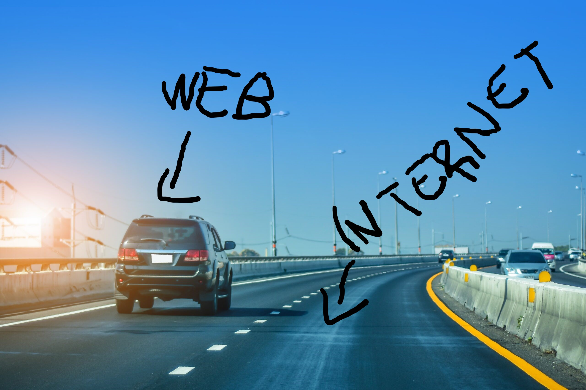

A Internet é uma rede mundial de computadores conectados entre si, como uma grande infraestrutura que permite a troca de dados. Já a Web (ou World Wide Web) é um dos serviços que utilizam essa infraestrutura da internet — ela é composta por páginas, sites e conteúdos acessados por navegadores. Resumindo: a Internet é a "estrada", e a Web é um "carro" que anda por essa estrada. Sem a Internet, a Web não funcionaria.
